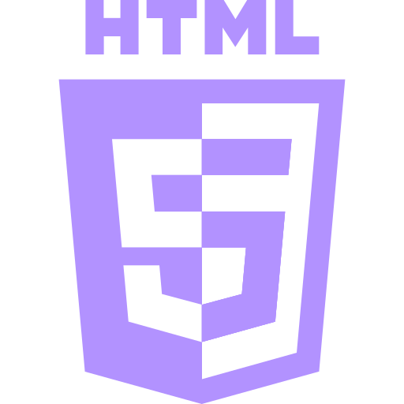
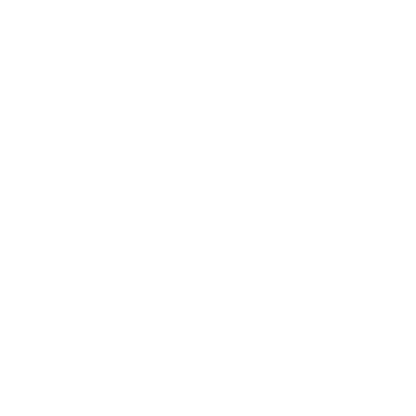
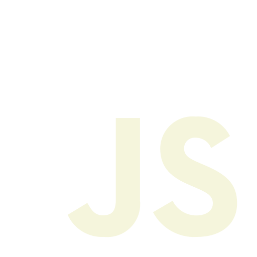
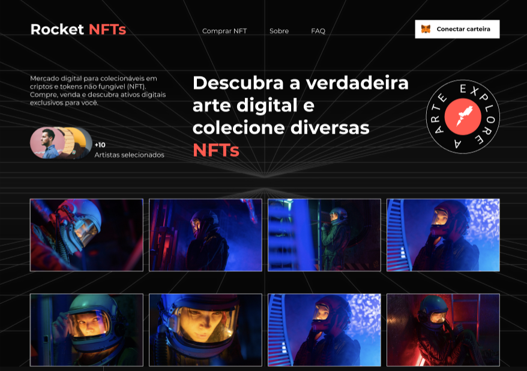

Antonio Elias 👋 Minhas Techs



Sobre Mim
Desde cedo, minha curiosidade por tecnologia e eletrônica moldou meu caminho. O que começou como um hobby se transformou em paixão, levando-me a cursar Técnico em Informática. Durante três anos, mergulhei no universo da computação, aprendendo desde gestão de projetos até o desenvolvimento Web.
Essa jornada incluiu uma experiência enriquecedora como estagiário na multinacional Vicunha Têxtil S/A, onde pude vivenciar a dinâmica de grandes operações e consolidar meu desejo de seguir carreira na área de TI.
Atualmente, sou graduando em Ciência da Computação no Instituto Federal do Ceará (IFCE) - Campus Maracanaú, dedicando-me a aprofundar meus conhecimentos técnicos e teóricos. Paralelamente, invisto no aprimoramento do meu inglês, reconhecendo-o como uma ferramenta essencial para o desenvolvimento profissional global.
Ferramentas
0 +Projetos
0 +Experiência
0 anoTechs que uso no dia a dia
HTML5
CSS3
JavaScript
React
Projetos
 16.16.04_c402475e.jpg)
Projeto desenvolvido com o objetivo de praticar conhecimentos em HTML e CSS, simulando um e-commerce de bicicletas elétricas.
 15.47.52_e9a3a849.jpg)
Site informativo sobre animais fantásticos, focado na prática de manipulação de DOM com JavaScript puro.
 16.59.09_b0042de3.jpg)
Layout moderno e responsivo desenvolvido para um portfólio de desenvolvedor web, explorando Grid e Flexbox.

Página de login minimalista e funcional, parte dos desafios de front-end da Rocketseat.

Landing page moderna sobre o mercado de NFT's, com foco em design arrojado e interatividade.
..Currículo
Formação Acadêmica
Bacharelado em Ciência da Computação
Instituto Federal de Educação, Ciência e Tecnologia do Ceará - IFCE2023 - Em curso
Escolher um curso como Ciência da Computação é como entrar em um mundo de possibilidades infinitas. Me encantei com a tecnologia e como ela pode transformar o nosso dia a dia. A computação é mais do que apenas programação, é uma forma de pensar, de resolver problemas e de criar soluções para problemas de forma inovadora.
Técnico em informática
EEEP Raimundo Célio Rodrigues2020 - 2022
O Curso Técnico em Informática é uma excelente oportunidade para quem busca uma formação sólida na área de tecnologia. Com duração de 3 anos, este curso é destinado a pessoas que querem concluir o ensino médio e desejam adquirir conhecimentos específicos para atuar no mercado de trabalho.
Idiomas - Inglês
Centro de Línguas2023 - Em curso
Durante o curso, busco aprimorar minha capacidade de compreender e produzir textos complexos, participar de atividades de conversação para melhorar minha oralidade e aprimorar meu vocabulário em diversos contextos. Este curso me proporciona uma base sólida no idioma e me prepara para interagir eficientemente em ambientes profissionais e acadêmicos onde o inglês é a língua principal.
Experiência Profissional
Front-End Dev
Núcleo de Desenvolvimento de Software (NDS)2024 - Em curso
O NDS é um Laboratório de desenvolvimento de sistemas de renome
dentre o meio acadêmico, um local que visa a integração e
participação de todos ali inseridos, buscando assim o crescimento
profissional de todos os envolvidos.
Este meu estágio
voluntário em desenvolvimento front-end, onde tenho a oportunidade
de mergulhar no mundo da programação web. Irei participar em
projetos, onde posso aplicar meus conhecimentos em HTML, CSS e
JavaScript para criar interfaces responsivas e interativas. A
experiência é enriquecedora, proporcionando um ambiente de
aprendizado prático e a chance de trabalhar em equipe, aprimorando
minhas habilidades técnicas e de comunicação. Este estágio reforça
meu interesse pela área e me motivou a continuar buscando
conhecimento e crescimento profissional na área de desenvolvimento
front-end.
Estágio em TI
Vicunha Têxtil S/aAgosto a Novembro - 2022
Reconhecida mundialmente pelos elevados padrões de qualidade e
sustentabilidade, a Vicunha é uma multinacional brasileira
presente na América Latina, Europa e Ásia. Com mais de 50 anos de
mercado, é referência global em soluções jeanswear.
Criação
de usuário em sistemas locais, manutenção via base de dados,
comunicação entre usuários da empresa, resolução de problemas de
TI, criação de relatórios com base em dados vindo de cosultas via
base de dados, estas atividades estavam dentro do meu plano de
atuação.